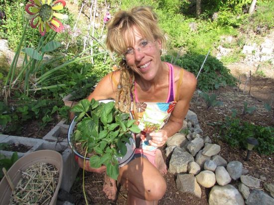

Sarah's Journey
Meet Sarah, a passionate advocate for sustainable living and a firm believer in the power of self-sufficiency. Her journey towards living off the grid began during her childhood, where she grew up in a bustling city surrounded by concrete and noise. However, she always felt a deep longing for a simpler, more harmonious way of life that was deeply connected to nature. As Sarah grew older, she became increasingly aware of the environmental challenges facing the world, from climate change to resource depletion. Motivated by her concern for the planet and a desire to make a positive difference, she embarked on a quest to find a lifestyle that aligned with her values. Sarah's first experience with off-grid living came during a hiking trip in a remote mountainous region. She stumbled upon a self-sufficient community that relied on renewable energy sources, practiced sustainable agriculture, and lived in harmony with the natural surroundings. Inspired by their dedication to environmental stewardship and the sense of freedom they embodied, Sarah knew that she had found her calling.
Determined to embrace this alternative way of life, Sarah spent years acquiring the necessary skills and knowledge. She studied permaculture and organic farming techniques, attended workshops on renewable energy systems, and connected with like-minded individuals who shared her vision. Through trial and error, she learned the importance of water conservation, sustainable building practices, and the delicate balance between self-sufficiency and community support. Sarah's decision to live off the grid was driven by her deep connection with nature, her desire for independence, and her commitment to leaving a positive impact on the environment. She wanted to create a sanctuary where she could live in harmony with the natural world, free from the pressures of modern society. Today, Sarah resides in a self-built off-grid cabin nestled amidst a pristine forest. Her home is powered by solar panels, and she collects rainwater for her needs. She tends to her thriving organic garden, growing a variety of fruits and vegetables, and she shares her surplus produce with the local community. Living off the grid has given Sarah a profound sense of fulfillment and purpose, allowing her to lead a sustainable lifestyle while inspiring others to consider alternative paths towards a greener and more balanced future.